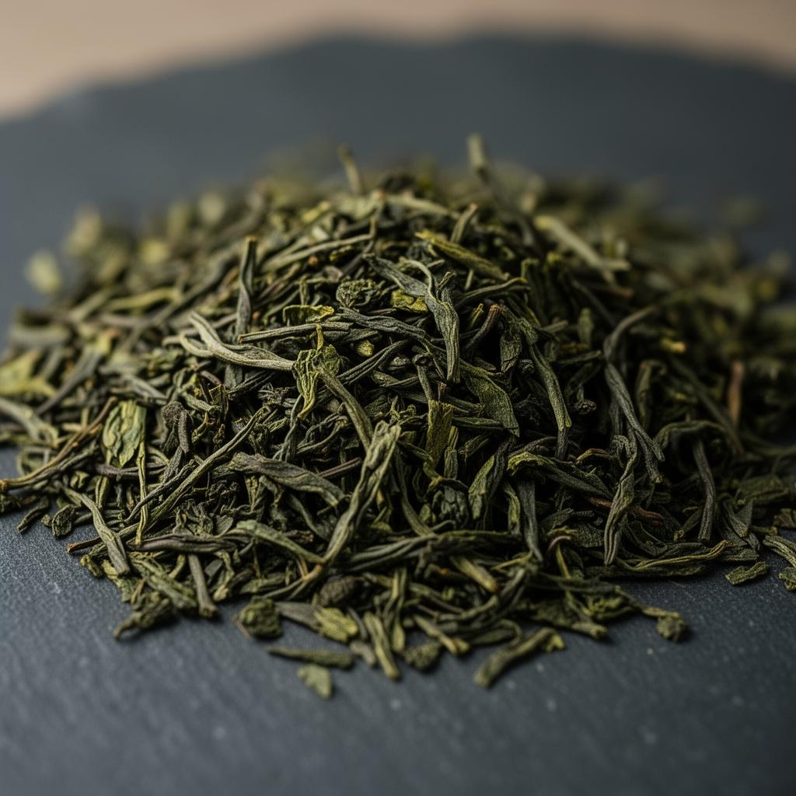

Verdant Tea's first spring Chunmee cupping series indicates a notably stronger opening to the season than last year, particularly in the reserve-grade lots intended for specialty retail and hospitality programs. Across the early samples, our team recorded tighter leaf curvature, cleaner appearance, and a brighter aromatic expression with chestnut and fresh-green notes appearing sooner in the cup.

These gains appear to come from a more stable pre-harvest climate window combined with stricter post-picking handling. Leaf integrity has improved, which matters for buyers building programs around visible quality cues. The liquor is showing a polished profile: a lighter first impression on the nose, followed by a sweeter body and less edge through the finish.
"The new lots feel more composed in the cup. They still carry Chunmee character, but with a cleaner silhouette and better commercial consistency."
What buyers should expect
For current partners, the main implication is improved reliability for spring launches. The first reserve lots are suitable for loose leaf formats, branded tins, and tasting-led hospitality programs where a clean sensory profile matters as much as visual leaf presentation.
- Reserve-grade Chunmee is cupping with stronger uniformity across early lots.
- Visual sorting appears tighter, improving dry leaf presentation.
- Chestnut sweetness is arriving earlier with lower perceived roughness.
- Initial export timing remains favorable for first-half retail planning.
Availability and next steps
Sample dispatch is now open for spring buyers who want to evaluate cup style against current packaging and pricing options. Verdant can also prepare comparative sets with Gunpowder and Organic Spring Leaf for customers refining broader green tea assortments.